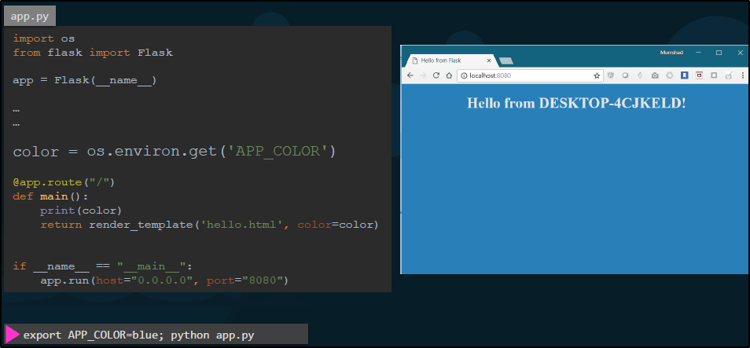

In alcune app, possiamo settare dei valori fixati.
Per essere più versatili nella programmazione, possiamo usare
le variabili di ambiente per essere più dinamici.

Possiamo settare le variabili di ambiente al run:
docker run -e VARIABLE=VALUE webapp-color


Possiamo vedere le variabili di ambiente facendo Inspect: